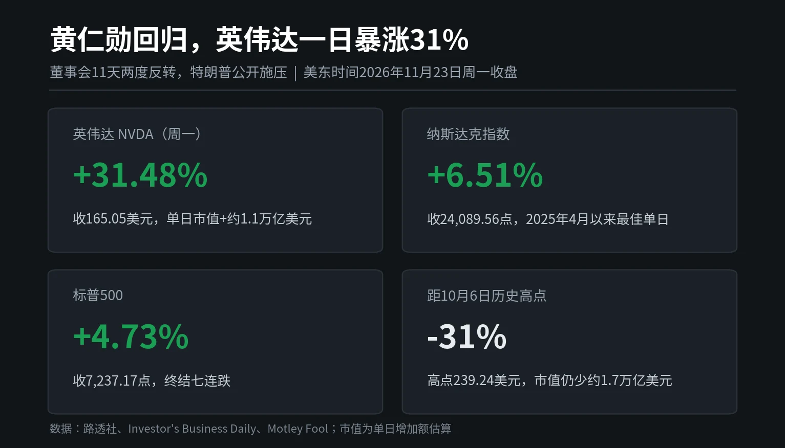

深度深读 · DEEP READ
黄仁勋回归，英伟达一日暴涨31%
英伟达单日暴涨31.48%，董事会11天内180度转向、特朗普公开施压；但SEC会计调查、财政部11月25日问询期限与12月1日国会作证一个都没消失——这场反弹定价的是人，不是风险。
DEEP TAKE · 本篇判断31%的涨幅定价的不是芯片，而是一个人：约1万亿–1.8万亿美元的“黄仁勋溢价”相当于一个台积电的市值——创始人溢价可以是护城河，也可以是单点故障。
英伟达 +31.48% 收 165.05 美元，单日市值增加约 1.1 万亿美元
纳指 +6.51%、标普500 +4.73%、道指 +3.01%，创 2025 年 4 月以来最佳单日
距 10 月 6 日高点 239.24 美元仍低约 31%，市值较峰值仍少约 1.7 万亿美元
财政部问询 11 月 25 日到期，黄仁勋 12 月 1 日赴国会作证
供应链跟涨：戴尔 +20.46%、美光 +19.04%、CoreWeave +22.3%
